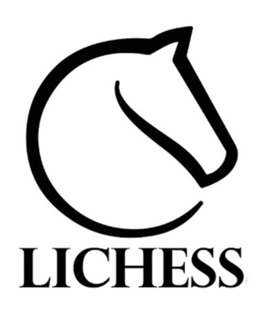
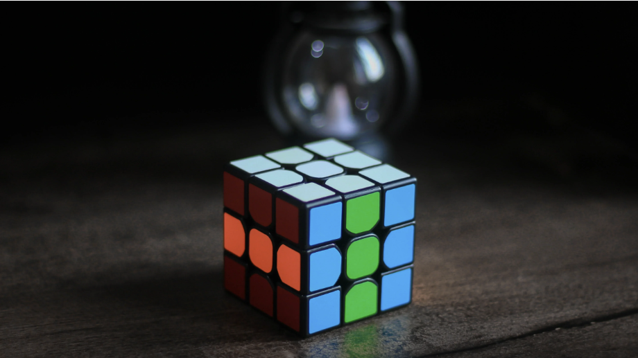
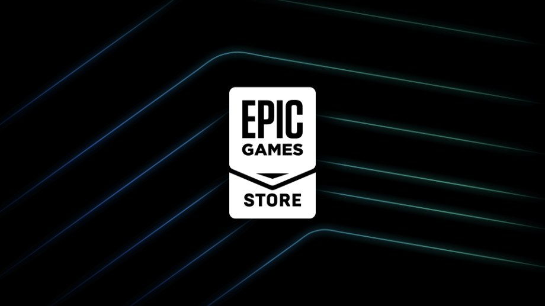

chess.com is best place to play chess. here is the link
chess.com

lichess is best place to learn chess, here is the website
lichess

rubiks cube.com is the main website for cubers, there u can buy cubes, or learn algorithms. here is the link
rubikscube.com

steam is a best games to buy pc games. here is the link
steam
epic games is like steam, i guess steam is better then epic games, but epic games have too good deals. here is the link
epic games
